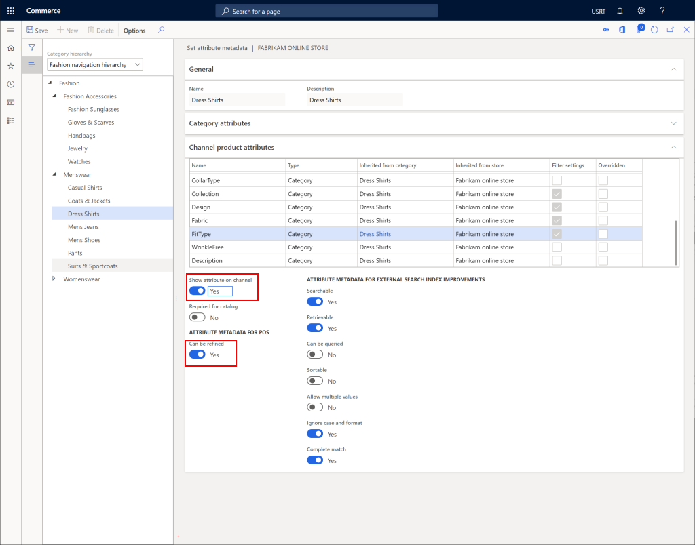

Configure a channel to use a channel navigation hierarchy
This topic describes how to configure a channel to use a channel navigation hierarchy in Microsoft Dynamics 365 Commerce.
Overview
Channel navigation hierarchies organize products into categories so that the products can be browsed on an e-Commerce site or at points of sale (POS). Retail and online channels must be configured with channel navigation hierarchies.
Configure the channel
To configure a channel to use a channel navigation hierarchy, follow these steps.
- In the navigation pane, go to Modules > Retail and commerce > Channel setup > Channel categories and product attributes.
- Select the channel to configure.
- On the action pane, select Set attribute metadata.
- In the Category hierarchy drop-down list, select the appropriate channel navigation hierarchy.
- On the action pane, select Save.
- Under Attribute group, add any attribute groups that will be global attributes for all nodes.
The following image shows how to configure a channel to use a channel navigation hierarchy.

Set attribute metadata
Setting the attribute metadata will allow configuration of attributes on each node.
To set attribute metadata, follow these steps.
- On the action pane, select Set attribute metadata.
- For each node select Channel product attributes.
- Set Show attribute on channel to Yes and Can be refined to Yes, to enable refiners on that channel.
- After configuring each node as desired, on the Action pane, select the Save button to save.
- Select the X in the top right corner to exit this screen back to the Channel categories and product attributes page.
The following image shows an example set of channel product attributes configured on a channel category node.

Publish changes
For changes to take effect, you will need to publish the changes.
To publish changes, follow these steps.
- On the action pane, select Publish channel updates.
- In the Publish channel updates pane, select OK.
The following image shows how to publish channel updates.